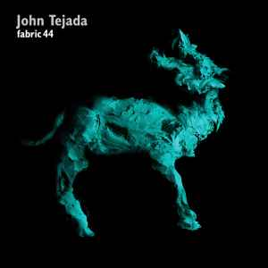

Fabric 44 by John Tejada
Jun. 5, 2023
This is one of my more played Fabric mix CDs so I decided to go for it when my random prompter plumped for this earlier today. One constraint of these posts was to write it in roughly the amount of time it takes to listen to it. You’d think that for a mix CD that would be ok. After all, this mix is a full CD and 74 minutes long.

However, mixes are a little different to albums in that one of the fun things about them is that they are in fact a sort of “meta-track”, a single entity much like that huge ever-growing pulsating brain that rules from the centre of the ultraworld by the Orb. And this is definitely more of that genre.
I started to write the review based on the track-listing, which led to sentences like the following: “Let’s Do It by Dave Hughes is nice stompy techno intro that goes surprisingly chill and housy half way through.” Unfortunately, there were a few problems with this approach:
- It’s really difficult to read and enjoy reading a post that iterates through twenty versions of “this was a mid-tempo dance track” peppered with the odd bit of genre information.
- That’s because although mixes live and die by the track selection, they also live and die on those transitions. If there’s no transition, there’s no mix, you’re just listening to a playlist. (And there’s nothing wrong with playlists either)
- You can listen to something like the second track on this mix (Kamm by Pigon if you’re keeping score) but unless you seek out the original vinyl or the original MP3, you’re gonna get the window ascribed to it in the track listing, and that might not always be the full picture because I’m pretty sure that elements of this track were introduced over the top of Let’s Do It and continue to appear over a few of the following tracks.
- This is the difference between a mix and a playlist.
- Of course, the interesting thing about Tejada’s music is that he does lean very heavily on minimalism and loops. His releases are on Kompakt, a German label reknowned for its frosty minimalism and austere techno, and so this whole mix is very much like a 74 minute single track, with parts and phases that evolve over time. Minimalism is rarely only ever about a repeating signature in the moment, but also about what that signature can end up building to.
- One of my favourite moments on this mix illustrates this point (and is probably what brought it home to me). Wax10001 by WAX seems to start (or at least be introduced to the mix) with a repeating figure that sounds like the word “boyfriend” repeated over and over. But over the course of its runtime, or at least the portion of the track used in this mix, the vocal sample or fragment appears to morph into something more like “point two point two” and then other numbers seem to appear at random. Now I don’t know if that’s even real, or just in the moment this afternoon when I listened to that track. Perhaps now I won’t hear it anymore, perhaps it’s boyfriend all the way! But I love how this supposed repetition and this supposed minimalism has actually created variation and intensification of its source material.
Anyway, these posts are going to be fairly rough and ready. But at least I can share those revelations.
Final thoughts: I do like this mix. I am not sure that I could dance to it, but there’s definitely enough to get you moving. The minimalism makes it quite good for working to and that’s probably why it’s one of my more listened-to Fabric mixes.